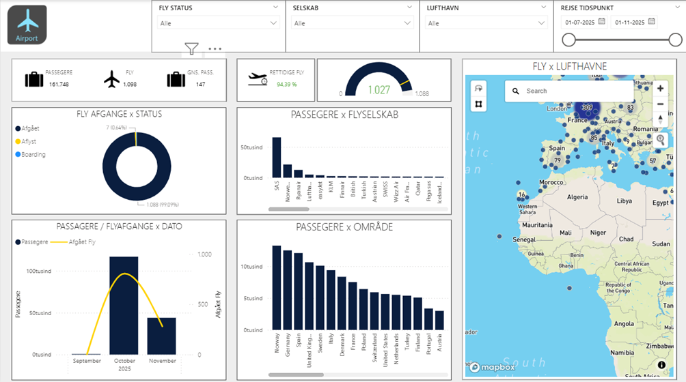
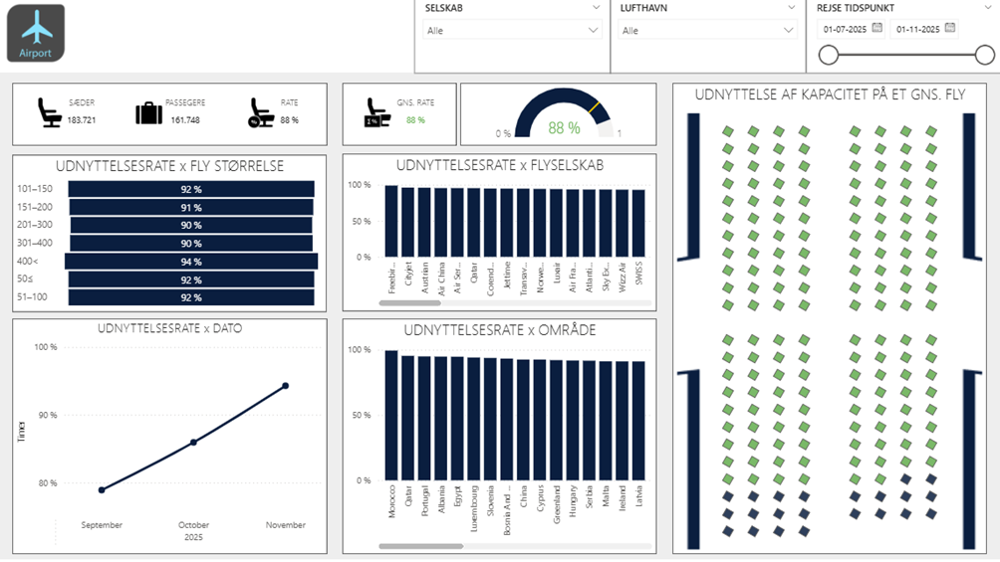

Realistisk case
Projektet er udviklet uden adgang til interne systemer og uden rigtige passagerdata, men stadig med ambitionen om at ligne en virkelig airport-leverance.
Denne version af projektet er bygget som et lille statisk website, hvor hver hoveddel af casen bliver fortalt som sin egen artikel. Det giver en roligere læseoplevelse end en enkelt lang side og ligger visuelt tættere på rapportens struktur.

I stedet for at presse alt ind på en enkelt page, er AIRPORT nu opdelt i selvstændige artikelsider. Det gør indholdet lettere at læse, mere redaktionelt og mere egnet til GitHub Pages som portefoljesite.
Introduktion til casen, målet med projektet og de operationelle spørgsmål løsningen er designet til at besvare.
Gennemgang af dataflowet fra simulation og ingestion til tabeller, views og genkørbare services i Docker.

Hvordan flights, passports, tickets og referencefiler bliver koblet til et plausibelt analyseunivers.

Et redaktionelt overblik over siderne for overblik, passagerflow og kapacitetsudnyttelse.
Oversigt over stack, repository-opbygning og hvorfor casen er et stærkt end-to-end eksempel.
Projektet er udviklet uden adgang til interne systemer og uden rigtige passagerdata, men stadig med ambitionen om at ligne en virkelig airport-leverance.
Syntetiske passagerer, billetter og timing bruges bevidst for at kunne vise plausible mønstre uden at arbejde med følsomme data.
Power BI er kun sidste led. Under overfladen ligger der ingestion, datamodellering, DAX, semantisk model og versionsstyret struktur.